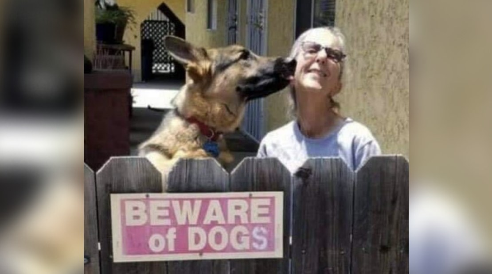

Jack is home.
My German shepherd — and service dog — was stolen out of my yard here in Long Beach on October 29. For three weeks, this community searched for him: sharing flyers, sharing the security footage, calling in every possible sighting. None of the leads panned out, and I won't pretend I wasn't starting to lose hope.
Then this past Monday evening, a woman living about a block away called. She thought she had a dog who looked like him. I tried not to get my hopes up — I'd been down that road before — but when she described his leather collar and silver tag, I knew. She walked him over, and the second he turned the corner and saw me, he started pulling on the leash to get to me.
"It's kind of unreal," I said. "I'm a little stunned."
Thank you
To the neighbor who recognized him and walked him home. To everyone who shared a flyer, called in a tip, or just kept an eye out. To everyone who chipped in toward the reward. This community showed up for me, and I don't take that for granted.
Thank you also to the journalists and outlets who helped carry this story near and far — every share and every article widened the net of people keeping an eye out for Jack:
- Long Beach Post — original report on the theft
- Long Beach Post — "It's kind of unreal": the reunion story
- CBS Los Angeles — on the theft
- CBS Los Angeles — video coverage of the search
- CBS Los Angeles — on Jack's return
- FOX 11 Los Angeles
- ABC7 Los Angeles
- KTLA
- Daily Mail — the story reached readers well beyond Long Beach
- Law Officer
- Coastal German Shepherd Rescue OC — helped spread the word and confirmed the happy update
Jack is slowly settling back in. Thank you, all of you, for caring about a dog and his person you'd mostly never met.
— Lisa